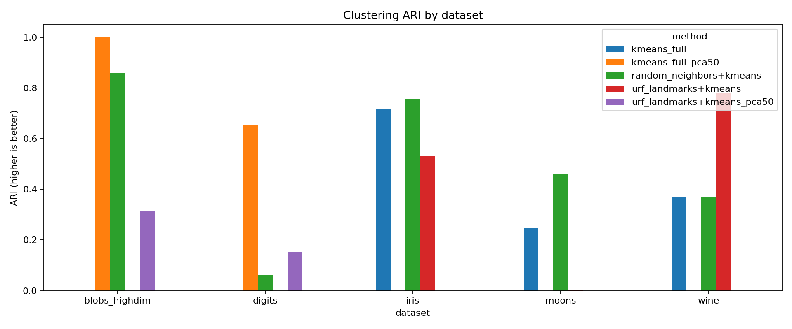
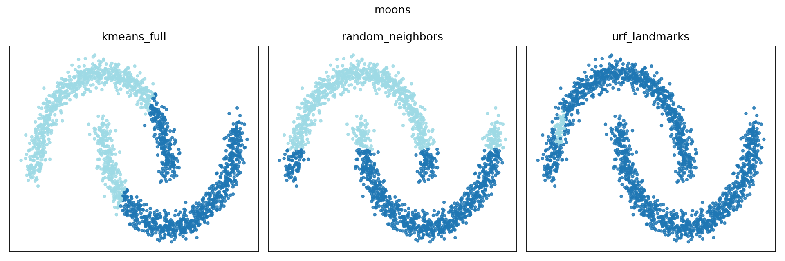

Random Neighbors
Random Neighbors samples rows and features to find feature subsets with good cluster separation. Explore a benchmark snapshot comparing its selected features with K-means and unsupervised random forest (URF) landmarks.
Results across five datasets
Adjusted Rand index (ARI) measures agreement with reference labels: 1 means perfect agreement, and values around 0 indicate chance-level agreement. Higher is better. No method wins on every dataset in this run.

| Dataset | K-means | Random Neighbors + K-means | URF landmarks + K-means |
|---|---|---|---|
| Iris | 0.716 | 0.758 | 0.532 |
| Wine | 0.371 | 0.371 | 0.782 |
| Digits | 0.653 | 0.062 | 0.152 |
| Moons | 0.247 | 0.458 | 0.003 |
| High-dimensional blobs | 1.000 | 0.860 | 0.312 |
A closer look at moons
On these 2,000 points, Random Neighbors selects one of the two features and improves ARI over the two baselines. It still does not fully recover the curved clusters.

About this snapshot
These are the saved results from February 12, 2026 (run 20260212_013704), using one random seed. They illustrate behavior on toy and tabular datasets; they do not establish a general ranking. The number of clusters is set from the known class count, and reference labels are used to evaluate the assignments.
Random Neighbors selects features using silhouette scores. Silhouette values computed in different feature spaces are not directly comparable; the table therefore reports ARI. See the benchmark implementation and reproduction instructions for the full setup.